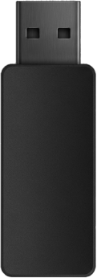

Approved by Koboss
@kobossbeats
@kobossbeats

¿QUIÉN SOY?
Soy Lusardi, productor de Barcelona.
Mi rol es simple: no hago música genérica. ¿Porque?, Me enfoco en crear identidades sonoras; textura, groove, dirección y carácter; para artistas que buscan un sonido propio.
Desde pequeño estudié violín, y esa base acústica siempre ha estado presente en mi forma de producir. Hoy combino ese background con el uso de instrumentos analógicos como el Model D, guitarras, violines y elementos acústicos cuando un track lo pide.
Trabajo con samples, grabaciones originales y diseño sonoro desde cero. Me gusta mezclar lo digital y lo analógico para conseguir un sonido que respire, que tenga vida y que destaque en un mercado saturado.
No creo la parte visual, pero puedo actuar como director creativo para guiar el proceso y asegurar coherencia entre sonido, estética y narrativa ya que tengo un gran interes en los proyectos tales como los concept album/ep.
Trabajo con un cupo limitado para garantizar la calidad. Cuéntame tu proyecto para ver si encajamos. Reserva tu plaza para ....
Preguntas frecuentes
¿Cómo podemos empezar a trabajar?
Cada proyecto es único. El primer paso es hablar sobre tu visión, referencias y objetivos para asegurar que mi sonido encaja con lo que buscas.
¿Qué tipo de proyectos tomas?
Trabajo con artistas que buscan desarrollar un sonido propio. No produzco beats al azar; me enfoque en proyectos con intención, ya sea un single importante, un EP o una idea conceptual. Priorizo colaboraciones donde pueda aportar en identidad sonora y dirección creativa.
¿Cuál es tu proceso de trabajo?
Fase 1: Concepto – definimos la vibra, referencias y dirección.
Fase 2: Sonido – creación de paleta sonora, selección de samples y texturas.
Fase 3: Producción – desarrollo del beat, estructura y arreglos.
Fase 4: Dirección creativa – guía estética para que sonido e imagen encajen (sin crear visuales directamente).
Fase 2: Sonido – creación de paleta sonora, selección de samples y texturas.
Fase 3: Producción – desarrollo del beat, estructura y arreglos.
Fase 4: Dirección creativa – guía estética para que sonido e imagen encajen (sin crear visuales directamente).
¿Trabajas con artistas de otros géneros?
Mi especialidad es trap, hip-hop 2000's, retro, new jack swing y estilos más funky, pero también tengo experiencia en tech house y fusiones electrónicas. Lo importante es la visión del artista.
¿Cuáles son tus tarifas?
Cada proyecto tiene un presupuesto personalizado según su complejidad, número de pistas y dirección creativa necesaria. Desde beats individuales hasta construcción completa de identidad sonora. Para presupuestos: Instagram para colaboraciones y email para propuestas formales.
¿Qué incluye tu 'estética sonora'?
Incluye:
• Identidad sonora coherente
• Paleta de sonidos personalizada
• Selección de samples y diseño de texturas
• Dirección creativa para guiar la estética visual del proyecto
• Storytelling musical y coherencia conceptual
• Identidad sonora coherente
• Paleta de sonidos personalizada
• Selección de samples y diseño de texturas
• Dirección creativa para guiar la estética visual del proyecto
• Storytelling musical y coherencia conceptual
¿Cómo iniciar una colaboración?
1. Escríbeme por Instagram (@lusardi_vt) con tu idea.
2. Si la visión encaja, hacemos una breve llamada.
3. Presento una propuesta conceptual inicial.
4. Acordamos alcance, timeline y presupuesto.
Importante: Priorizo proyectos con visión clara y ganas de construir un sonido propio.
2. Si la visión encaja, hacemos una breve llamada.
3. Presento una propuesta conceptual inicial.
4. Acordamos alcance, timeline y presupuesto.
Importante: Priorizo proyectos con visión clara y ganas de construir un sonido propio.

POR TIEMPO LIMITADO